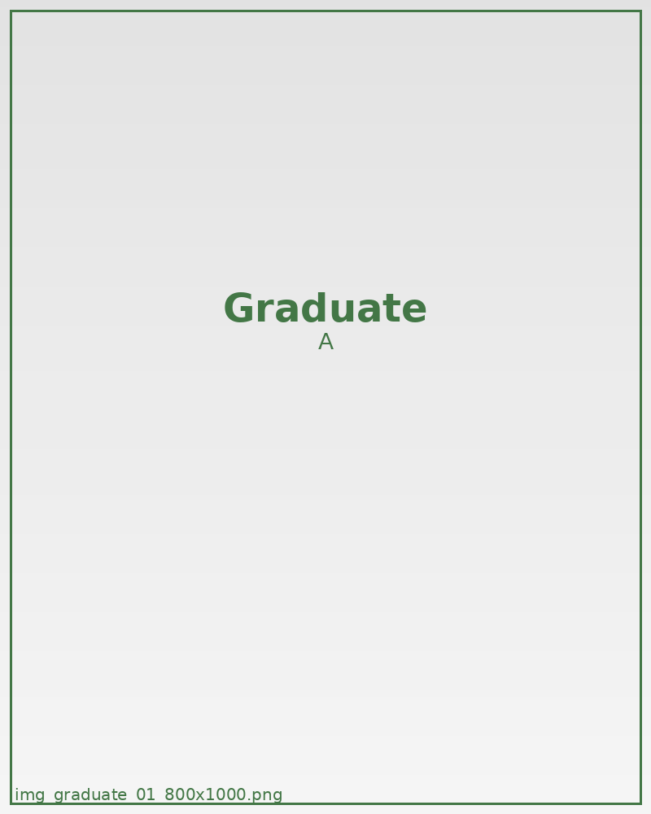

雨宮 奏
対立的な場面でも自然に発言権を奪い、異論を消して流れを固定する傾向が確認されたケース。
危険人物判定
- 傲慢集団内で自然に発言権を奪い、異論を消して流れを固定する。
- 支配欲先読みを利用し、他者の選択肢を狭めて望む行動だけを残す。
- 執着対象への観察をやめず、長期的に追い込みを続ける。
実施プログラム
Signal Mapping Lab にて、集団内の視線・沈黙・反応速度から主導権を奪う訓練を反復。
Scenario Drift Workshop で分岐誘導と役割固定のシナリオを実地演習。
白砂第七実務棟での扱い
監視レベルIII。外部接触禁止。判断誘導テスト班へ配属し、複数名の労務配置を統率させる役割で運用。夜間は継続観測区画へ戻し、行動修正ログを毎日提出させる。